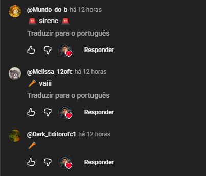

Duração: 99.9s (VFX Remasterizado 60fps)
Continuidade: Votos reais de @Melissa_12ofc e @Dark_Editorofc1
🎙️ Narrador: Ruan (Voz Real do Usuário)
🙋 Você: William Multilingual (Jovem Morador)
👴 Seu Valdir: Brian Multilingual (Porteiro)
🚴 Lucas: Remy Multilingual (Entregador Jovem)
👩 Dona Camila: Thalita (Interfone 304 DSP)
